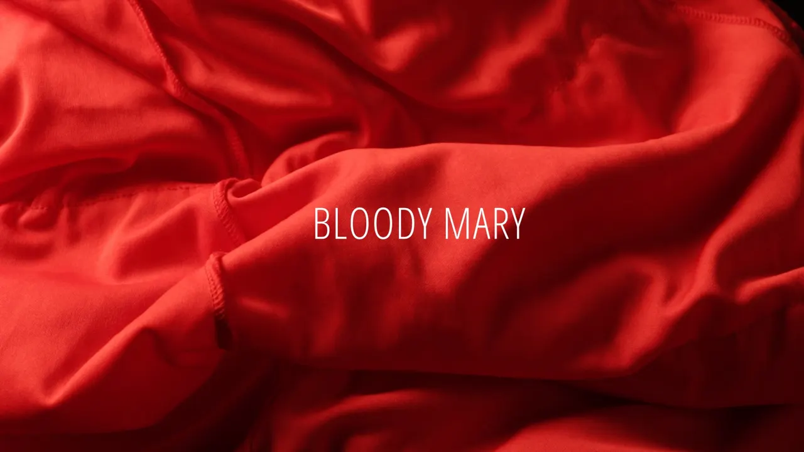

BLOODY MARY
- 2024
Imagination d'une série et réalisation de son générique.
Suivez les enquêtes d'une inspectrice qui traque une mystérieuse meurtière dont on ne sait qu'une chose : elle tue des femmes lors de soirées mondaines en plongeant un poison dans leur verre.
Scénario original pensé et tourné en collaboration avec Estelle Fradin et Agathe Meslem.